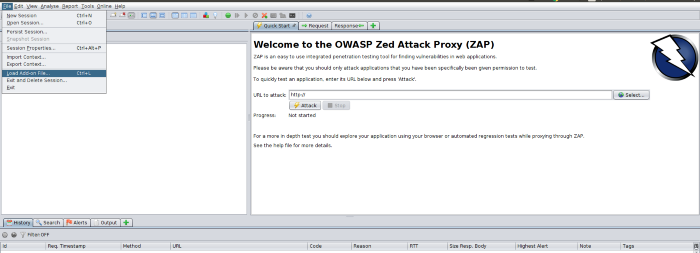
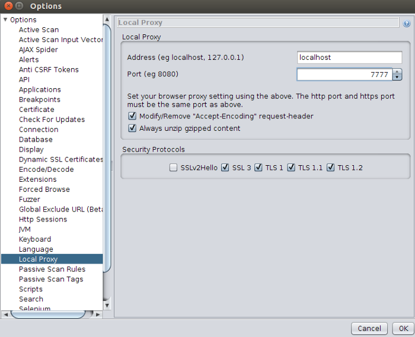
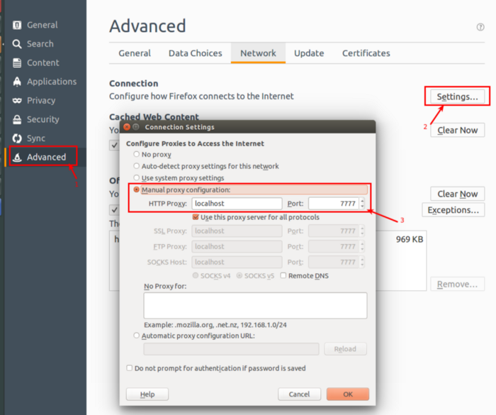
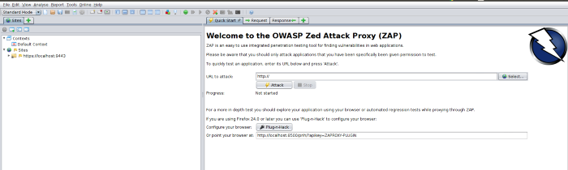
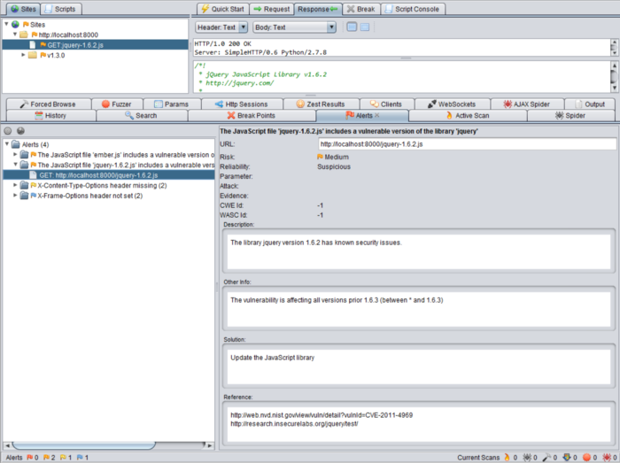

We will see how we can use Retire.JS with ZAP to identify vulnerabilities in JavaScript libraries.
The first step is to download the Retire add-on for ZAP from the internet. No link will be attached as the versions and links always change.
1. Go to File -> Load Add-on File and load the add-on to the ZAP

2. Click onthe retirejs-XXXXX.zap (where XXXXX is the current release) and update the ZAP with the add-on by click open.(You won’t be able to observe any UI changes after adding the add-on but you can verify the update by checking /home/
3. Go to Tools → Options → Local Proxy and set the hostname/ip address and the port number for the proxy. (In this example, the port is set to 7777 which is selected randomly)
4. Now ZAP tool is ready to capture the traffic going through the above set port number. Next step is to configure the browser to send traffic through this port number so ZAP tool can trace them. In Firefox, go to Edit → Preferences and in the Advanced options, click on Settings under the Network tab.
Select the Manual proxy configuration and set the hostname/ip and the port number.
5. Now, go to Firefox and access the your application. You will see the traffic goes through ZAP proxy.
Continue the scanning, you will observe the reported JavaScript vulnerabilities under the Alerts tab
